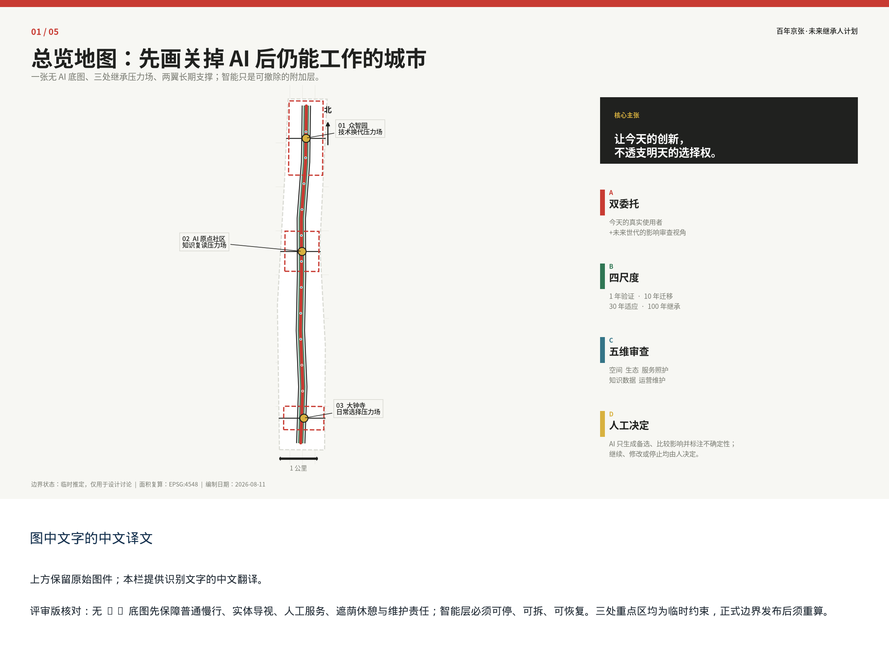
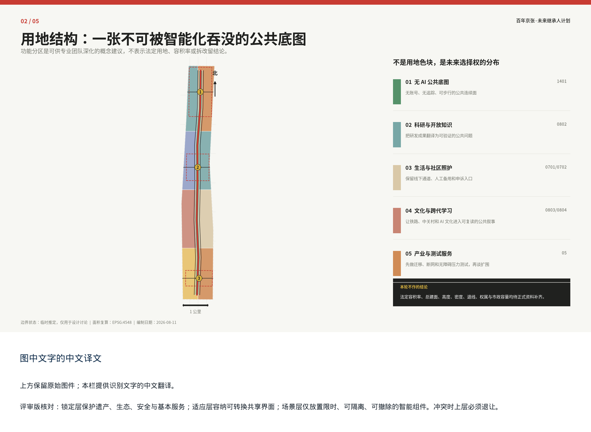
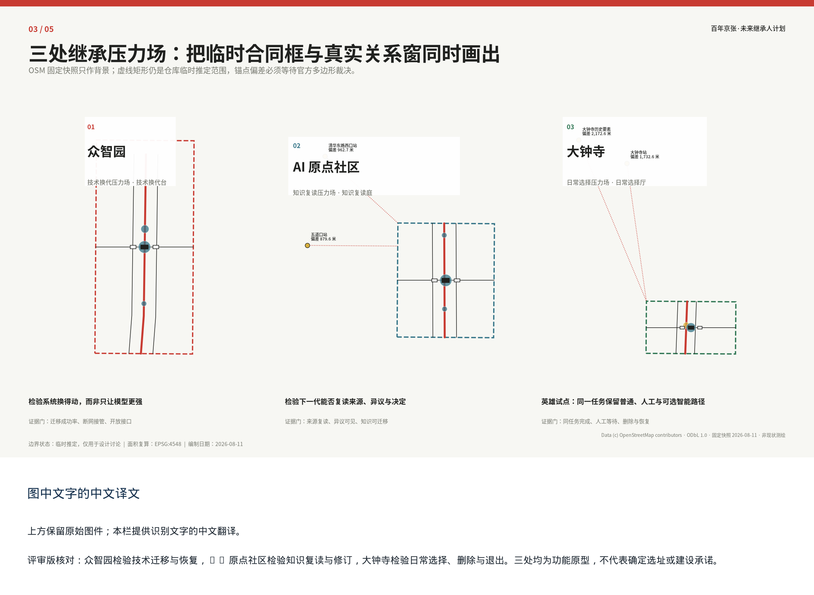
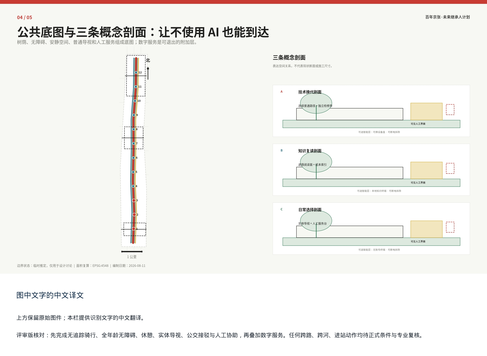
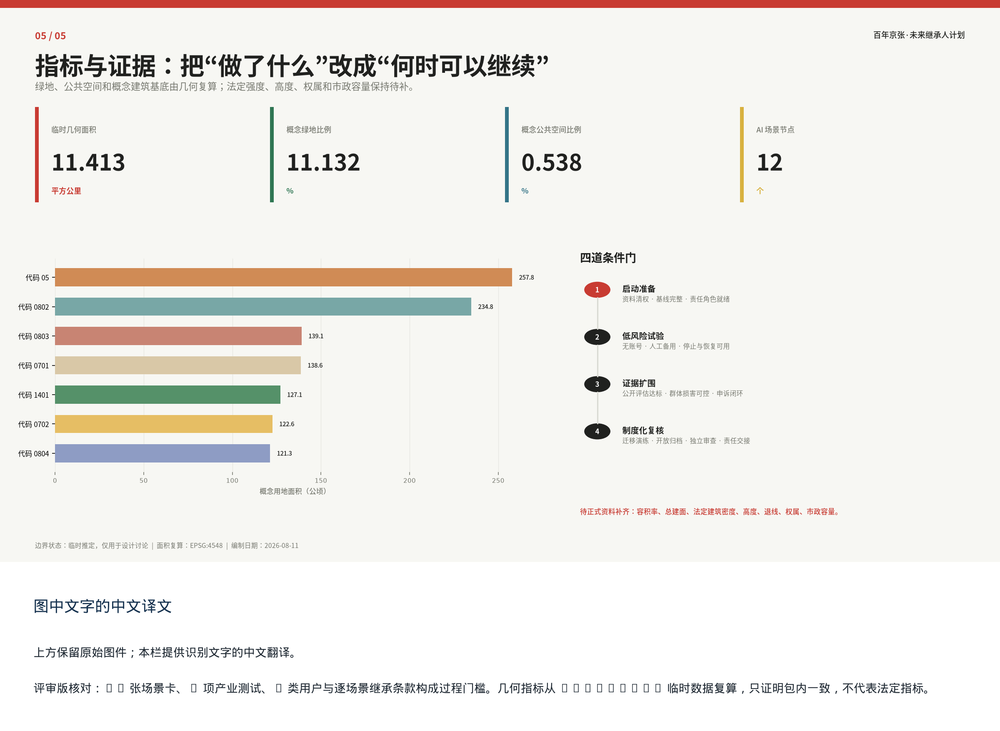

01 统筹研究
约 43.6 平方公里
研究产业、人才、未来城市和区域协同，不输出法定地块结论。
让今天的创新，不透支明天的选择权。
这不是一套把 AI 塞进城市的功能清单，而是一套为未来保留更换、退出、申诉和重新决定权的空间与治理协议。第一屏之后即是可复算的图层、指标、场景和条件门。
先画关掉 AI 后仍能工作的城市：一张无 AI 底图、三处继承压力场、两翼长期支撑。树荫、慢行、无障碍、普通导视和非数字服务先成立，智能层才有资格叠加。

研究产业、人才、未来城市和区域协同，不输出法定地块结论。
数值仅是仓库临时几何在 EPSG:4548 下的复算值，不是官方红线面积。
众智园、AI 原点社区、大钟寺的定位分别对应技术、知识与日常生活。
概念用地围绕无 AI 公共底图组织，概念建筑只表达可拆测试单元和三个地标原型，不表示现状建筑或拆改留结论。


固定 OSM 快照证明了一个必须正面处理的矛盾：任务书点名锚点均不落在当前临时重点区内。临时几何继续承担投稿契约，真实关系窗只承担背景研究；官方多边形到达后整包重算。
| 背景锚点 | 对应临时重点区 | 到临时重点区距离 | 当前判断 |
|---|---|---|---|
| 五道口站 | AI 原点社区临时重点区 | 879.6 米 | 不在临时范围内，须等待官方多边形裁决 |
| 清华东路西口站 | AI 原点社区临时重点区 | 962.7 米 | 不在临时范围内，须等待官方多边形裁决 |
| 大钟寺站 | 大钟寺临时重点区 | 1,732.6 米 | 不在临时范围内，须等待官方多边形裁决 |
| 大钟寺历史要素 | 大钟寺临时重点区 | 2,172.6 米 | 不在临时范围内，须等待官方多边形裁决 |
Data (c) OpenStreetMap contributors · ODbL 1.0 · 固定快照 2026-08-11 · background_only · 非官方边界、非现状测绘、非工程依据。
交通慢行、树荫和公共服务不依赖账号、持续定位或模型可用性。更新项目从断点修补和低风险试验开始。

可换设备盒不侵占连续通行面，单点停机不影响基本服务。
下一代无需原供应商或特定终端，也能读到来源、异议与版本。
可选终端位于附加带，关闭后普通路径与人工服务保持完整。
目标为一个工作班次内完成；这是 90 日试点的预登记放行条件，不是已经实测的绩效。
同一问题、同一约束、同一五维资产—负担审查。AI 生成并比较备选，人类明确拒绝高技术叠加案，保留纯无 AI 底图为强制基线，对平衡案只作条件选择。
概念成本：68至110万元；不是报价。
人工判断：在缺少客流、许可和现场证据时，以持续感知换取尚未证明的边际收益；违反最小数据与无 AI 底图优先原则。
概念成本：38至68万元；不是报价。
人工判断：只有在现场走查、权属与运营授权完成，且无 AI 路径先达到同任务基线后，才进入 90 日低风险试验。
概念成本：24至42万元；不是报价。
人工判断：它不是被淘汰方案，而是所有智能叠加必须保持可用且不得降低的比较基线。
证据类型：synthetic_design_exercise。本页记录的是本地合成设计演练，不是真实审批、采购决定或现场绩效。
前三个为产业测试验证场景。每张卡同时记录受益人、可能承担代价的人、数据寿命、人工替代、申诉、停止、恢复和责任角色。
最小数据 · 人工备用 · 可申诉 · 可停止 · 可恢复
最小数据 · 人工备用 · 可申诉 · 可停止 · 可恢复
最小数据 · 人工备用 · 可申诉 · 可停止 · 可恢复
最小数据 · 人工备用 · 可申诉 · 可停止 · 可恢复
最小数据 · 人工备用 · 可申诉 · 可停止 · 可恢复
最小数据 · 人工备用 · 可申诉 · 可停止 · 可恢复
最小数据 · 人工备用 · 可申诉 · 可停止 · 可恢复
最小数据 · 人工备用 · 可申诉 · 可停止 · 可恢复
最小数据 · 人工备用 · 可申诉 · 可停止 · 可恢复
最小数据 · 人工备用 · 可申诉 · 可停止 · 可恢复
最小数据 · 人工备用 · 可申诉 · 可停止 · 可恢复
最小数据 · 人工备用 · 可申诉 · 可停止 · 可恢复

任务覆盖包括公告 1.3、1.4、1.5 与 agent.1–agent.6；完整定位、图层、指标、图件、来源和自检链条保存在结构化矩阵中。
任务与范围来自官方公告、征集官网、仓库 site package 与标准本地快照；临时边界来自仓库 provisional_boundaries.geojson，仅可临时生成与讨论。
官方精确红线、法定用地与强度、现状建筑、权属、交通、市政和用户基线待补。任一高影响数据更新都必须重算几何、指标、图件和相关文字。